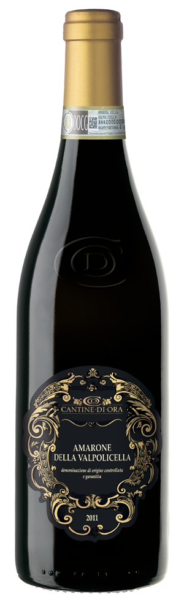

Amarone della Valpolicella. Cantine di Ora
Вино защищенного наименования места происхождения, регион Венето (Италия) полусухое красное, категории DOCG.
Вино защищенного наименования места происхождения, регион Венето (Италия) полусухое красное, категории DOCG. Изготовлено из винограда сортов Корвина – 60%, Корвиноне-30%, Рондинелла -10%. Вино обладает красно-рубиновым цветом с гранатовыми отблесками, насыщенными фруктовыми ароматами, с нотками вишни и ванили во вкусе. Прекрасно как само по себе, так и в сочетании с блюдами из дичи, с острыми мясными закусками, а также со зрелыми сырами. Подавать при температуре 14-16°С.
| Дополнительная информация | ||||
| Что говорят люди | Сливки, ежевика, джем | Лакрица, перец | Вишня, красный фрукт | |
| Сочетание с едой | Говядина | Баранина | Дичь (оленина, лосятина) | |
| Ранжирование | Топ 1% в мире | Топ 5% вин из Amarone della Valpolicella | ||